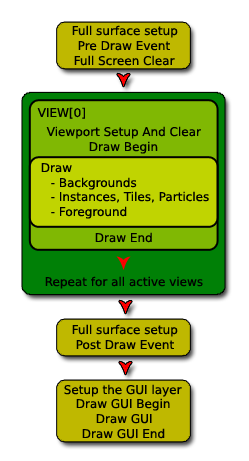

Veamos cómo la application surface se ajusta al draw pipeline. GMS tiene varios
eventos dentro de la categoría Draw, y cada uno maneja una parte diferente
del proceso de rasterización. Para empezar tenemos el evento Pre Draw,
que dibuja antes que los demás y directmente al back buffer. Después tenemos
los eventos Draw Begin, Draw y Draw End, donde se dibuja
la mayor parte del juego. Después tenemos el evento Post Draw y, por
último, los eventos Draw GUI.
La application surface se maneja en los eventos Draw regulares, y cada vista
activa dibuja en ella. El siguiente diagrama explica el proceso con más detalle:

En el diagrama puede ver que la sección verde oscuro contiene el dibujo de las
vistas y los eventos Draw principales, y ahí es donde se dibuja en la application
surface. Esto significa que puede dibujar abajo y sobre la superficie usando
los eventos Pre y Post Draw, así como la capa GUI sobre todo lo anterior.
Afortunadamente todo parece funcionar de forma directa, así que entraremos en
más detalle y hablaremos sobre cómo se define la application surface. Cuando
no hay vistas activas, la application surface se ajusta al tamaño de la primera
habitación, por lo que se debe cuidar que esta habitación no tenga un tamaño
excesivo, como 20000x20000! Esto también implica que, al cambiar a habitaciones
de diferente tamaño, la application surface se debe redimensionar.
Ahora, ejecute el juego de pueba que acompaña a este tutorial, verá que el
juego transurre en una habitación alargada horizontalmente, y la ventana
tiene el mismo tamaño.
Presione <ENTER> para cambiar a la siguiente room (que es más pequeña),
¿y qué sucede? la imágen se estira para ajustarse al tamaño anterior.
Esto no es un error, es así como funcionan las cosas ...
Este problema se soluciona con la función
surface_resize.
Vamos a arreglarlo y a revisar otra característica relacionada con la
ventana de juego ... Primero, edite el objeto obj_Control y agregue un
evento Room Start con el siguiente código:
surface_resize( application_surface, room_width, room_height );
Ejecute el juego y presione <ENTER> para ver qué sucede. Debe ver que
la segunda habitación se dibuja correctamente, pero centrada en la ventana de
juego. ¿Por qué está centrada y por qué la ventana no cambia? Bueno, está
centrada porque la opción Keep Aspect Ratio (mantener relación aspecto)
está marcada (en los Ajustes Globales de Juego), lo cual forza a mantener el
"mejor ajuste" para la application surface dentro de la ventana de juego, y
la ventana en si no cambia porque es independiente de la application surface.
La opción Keep Aspect Ratio es altamente útil al crear juegos, pues en
muchas situaciones evita la necesidad de crear complicados códigos para escalar
lo que se dibuja en la ventana o pantalla. No obstante, se puede desactivar
(seleccionando Strecth to Fit) y controlar manualmente la escala y la
posición de la application surface (esto se puede ver en el tercer tutorial
de esta serie, en la sección avanzada).
Al redimensionar la application surface o al usar vistas, es importante tomar
en cuenta lo que se quiere dibujar en la pantalla. Al usar vistas, el view port
define cuántos pixeles se van a dibujar, así que no hay razón para redimensionar
la application surface a un tamaño mayor que será escalado para ajustarse al view
port; se estarían renderizando pixeles que no se muestran, algo que está lejos
de ser óptimo. Por tanto, al cambiar el tamaño de la application surface, se debe
tomar en consideración la resolución de la pantalla (en dispositivos portátiles)
o el tamaño de la ventana y el view port (en plataformas de escritorio).
Note que no hay problema si la habitación o la vista es más pequeña que la
ventana (o pantalla), ya que estirar la application surface a un tamaño
mayor tiene un impacto mínimo en el rendimieto.